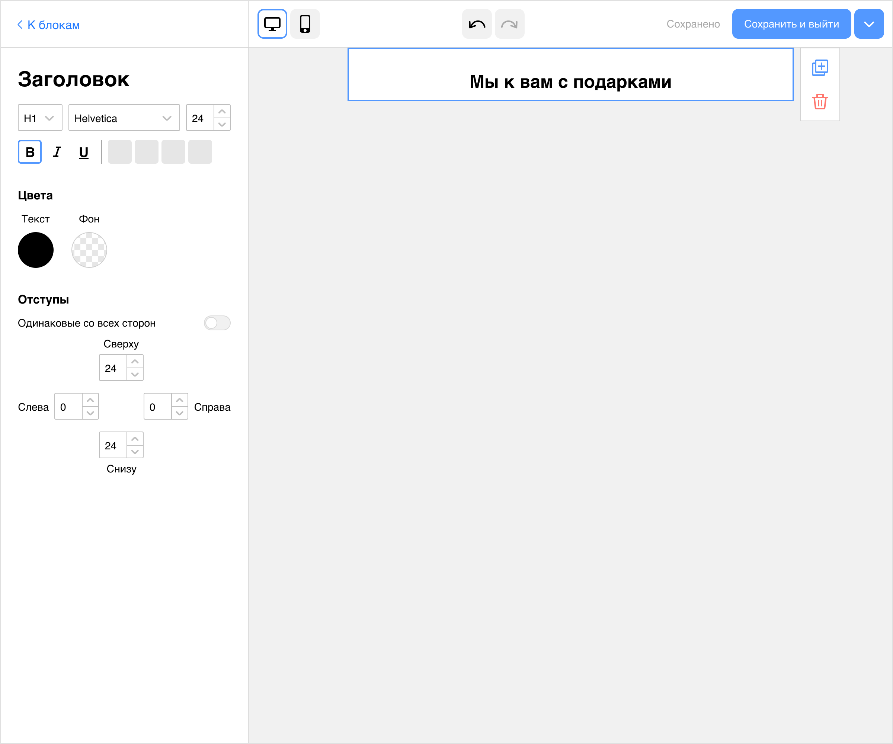

Создание письма для рассылки
Задача из тестового задания.
Постановка задачи
В CRM-системе маркетологи создают кампании. Это могут быть SMS-рассылки, Push-уведомления или Email-рассылки. В задании предложено спроектировать страницу создания письма Email-рассылки для кампании. При создании кампании с почтовой рассылкой маркетологи не только собирают письмо, но еще заполняют дополнительные параметры самой кампании.
Решение
1. Аналитика
Сценарий
Сценарий создания письма начинается на главной странице сервиса с создания кампании.
Если сценарий создания кампании основной у маркетологов — на главной должна быть заметная большая кнопка для этого.
Если основных сценариев несколько, на главной странице в зоне основного контента можно поместить большие плашки или кнопки для быстрых основных действий.
Если какие-то опции в создании кампании влияют на тип письма, их надо спросить на шаге, когда только начали создавать кампанию. Оставшиеся поля можно заполнить после создания письма. Самое ключевое, главное, долгое по времени — это создание самого письма, поэтому мы начинаем с него, а потом уже занимаемся заполнением дополнительных параметров.
Аналоги
Я посмотрела аналоги сервисов для создания писем. Самым удобным и понятным мне показался Mailchimp. Тем не менее какие-то изменения я все же внесла. Например, убрала возможность выбора шаблона, когда пользователь уже накидал блоков в письмо. Выбрать шаблон можно, пока экран пуст, есть кнопка. Она пропадает, когда пользователь начал собирать письмо из блоков. Не хочется, чтобы пользователь выбрал шаблон и уже собранное письмо пропало.
2. Проектирование

Подсказки
Для новичков я сделала пару подсказок, чтобы им было проще начать работу.
Первая подсказка — прямо на пустой странице. Она поясняет, что блоки из левой панели можно таскать. У Мэйлчимпа в новом письме уже есть блоки дефолтного письма, и их надо каждый раз удалять. Это кажется неудобным. Лучше уж научить пользователя таскать плиточки.
Вторая подсказка касается настроек стилей для блоков — если их настроить сразу, не нужно будет перенастраивать стили для однотипных объектов.
Настройка стилей для блоков
Тут мне не хватило информации, какая чаще бывает структура письма, как часто она требует настройки стилей. Может оказаться, что обычно в письме одна ссылка, одна кнопка и так далее, тогда особого смысла настраивать стили нет. Нужно больше информации по сценариям маркетологов. Если же настройка стилей в новом письме происходит очень часто, можно подумать про начало сценария создания письма со второй вкладки, «Стилей», а не с «Блоков».
В «Стилях» предполагаю настройку общей страницы письма: фон для письма и фон вокруг него, ширина блока с содержимым. Также настройки для основных объектов: заголовка, текста, кнопки, ссылки, загрузка логотипа. Еще я бы сделала дополнительное сохранение набора стилей. Например: это стили для рассылок одного проекта, а это для другого. Пользователь выбирает нужный набор стилей и идет собирать письмо.
Привычные контролы
В настройках свойств объектов я использовала привычные нам контролы. С большей частью из них мы знакомы из документов Гугла, Ворда, других редакторов.
Расположение настроек блоков
Все настройки блоков в левой панели, их не надо искать в разных частях экрана. У Мэйлчимпа часть настроек текста вынесена в верхнюю панель, как в Гуглодоках, а часть в боковой панели. Мне кажеся это не очень удачным. Например, где должна быть настройка цвета текста? У Мэйлчимпа она вовсе не среди настроек шрифта, выравнивания, а в левой панели. Кажется, это не очевидно, пользователю придется каждый раз искать эту настройку в двух местах.
Собранное письмо можно сохранить как шаблон — около кнопки сохранения есть выпадашка с этим действием. Оно кажется не таким частотным, как общее сохранение и предпросмотр, поэтому спрятала в выпадашку.
Превью
Не стала делать отдельной кнопкой превью с открытием нового окна. Превью для десктопной версии уже показывается прямо тут. Поэтому сделала переключалку на мобильную версию — письмо уменьшится по ширине под мобильные, его можно будет продолжить редактировать в этом режиме.

Настройки для разных блоков
Блоки в режиме редактирования
Отрисовано не все
Я отрисовывала только часть иконок для этого задания для экономии времени. В плитках объектов и настройках текста вместо них серые прямоугольники.
3. Тестирования на пользователях
Я протестировала три статичных экрана на 5 пользователях.
Вопросы пользователям были такие:
Экран 1
- Как начать создавать письмо?
- Как настроить общие стили для всего письма?

Экран 2
- Как выбрать шрифт Arial и сделать цвет шрифта зеленым?
- Как поменять очередность блоков?
- Как удалить блок?
- Как вернуться из редактирования блока к плиточкам с блоками, чтобы добавить новый блок?
Экран 3
- Как поменять картинку?
- Как посмотреть превью письма для мобильной версии?
- Как сохранить это письмо как шаблон?
Результаты тестирования
- Двух первых человек смутили стрелки отмены действий (экран 2, вопрос 4). Они смотрели на стрелки и на ссылку в левой панели, которая в первых версиях называлась «Готово»:

Слова «Готово» или «Сохранить» воспринимаются как финальные действия в редакторе письма. Я поменяла вид стрелок отмены и название ссылки — «К блокам. А также перенесла стрелки в центр панели. Вариант «К блокам» и новые стрелки больше не путали людей.
- Один человек не понял, что означает раздел «Раскладка» в «Блоках», переименовала его в «Колонки»:
- Один человек не понял, как менять блоки местами. Есть пользователи, которые не встречали такой элемент управления. Но большинство с ним знакомо. Можно добавить одноразовую подсказку в момент первого появления правой панельки с действиями.